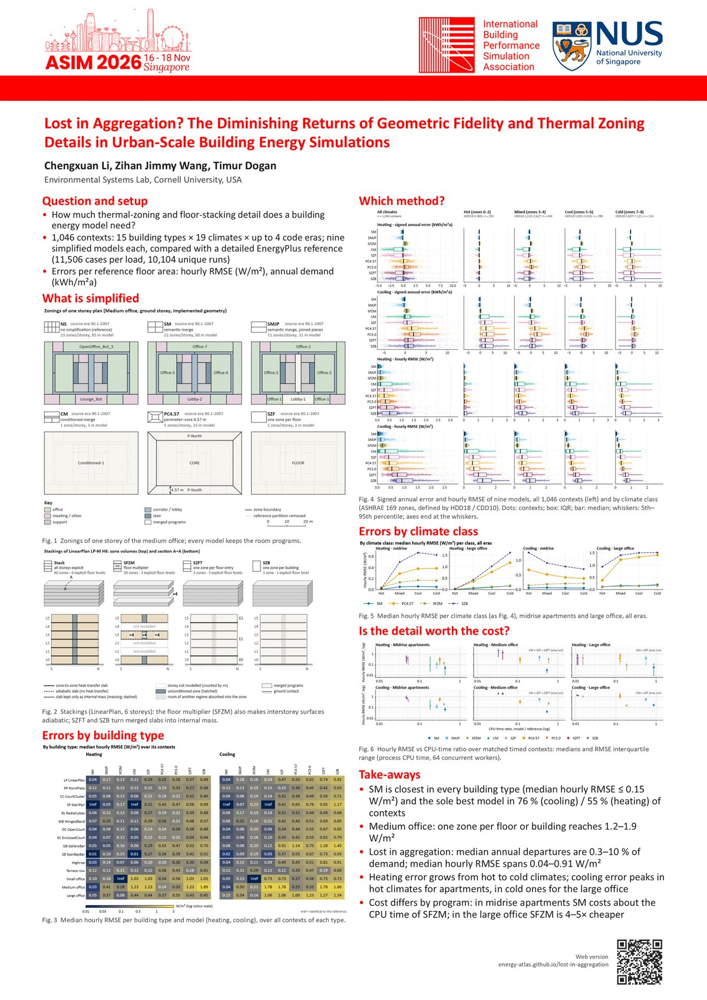
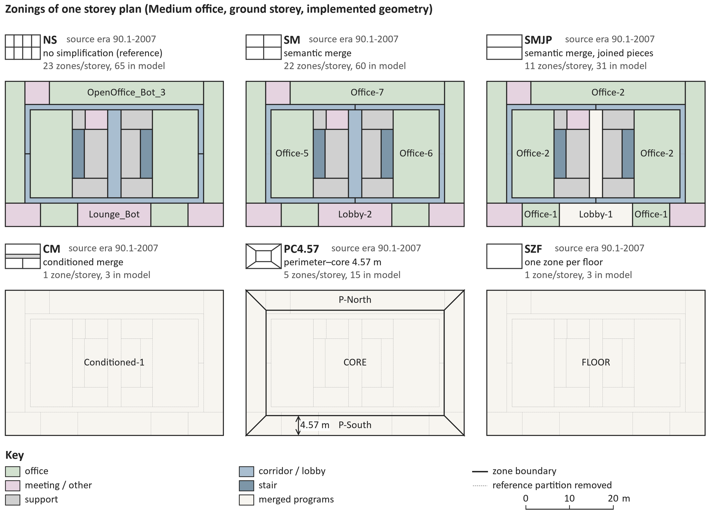
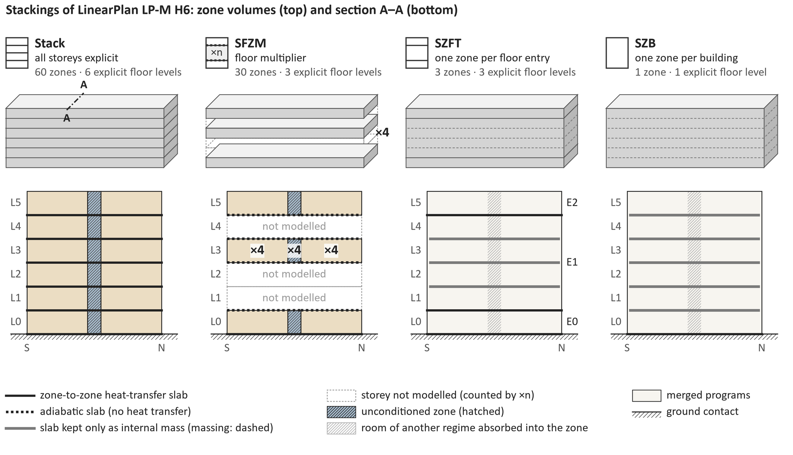
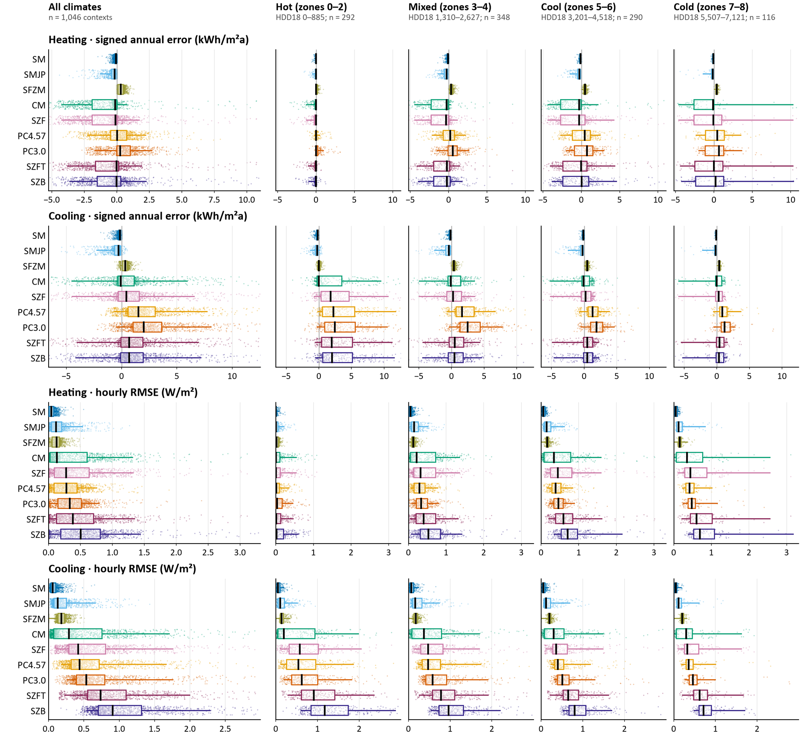
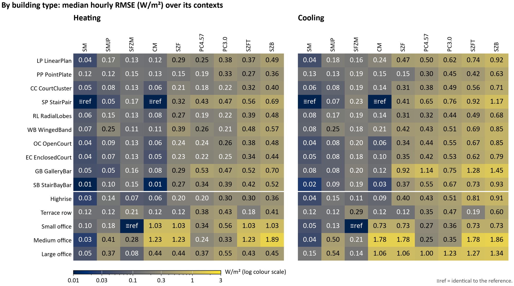
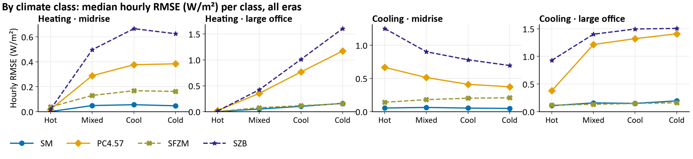
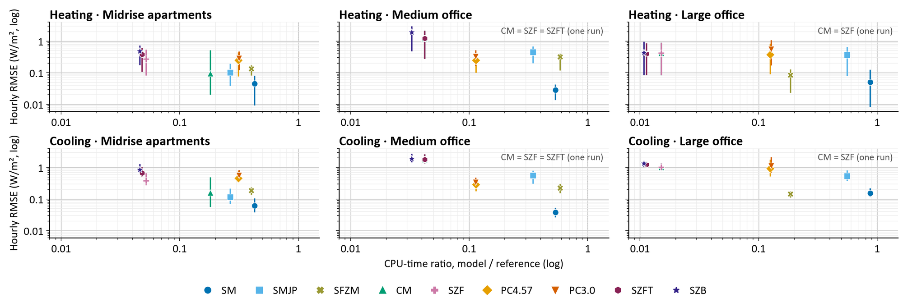

Question and setup
How much thermal-zoning and floor-stacking detail does a building energy model need?
- 1,046 building contexts: 15 building types (10 midrise apartment families, a highrise, a terrace row, and small, medium and large offices) × 19 climates × up to 4 code eras.
- Nine simplified models per context, each compared with a detailed EnergyPlus reference in which every room is a zone and every storey is explicit (11,506 cases per load, served by 10,104 unique runs).
- Errors are expressed per reference conditioned floor area: hourly RMSE (W/m²) and annual demand (kWh/m²a).

Key findings
- Semantic merge (SM) is closest in every building type (median hourly RMSE ≤ 0.15 W/m²) and the sole best model in 76 % (cooling) / 55 % (heating) of contexts.
- Building type matters: in the medium office, one zone per floor or per building reaches 1.2–1.9 W/m².
- Lost in aggregation: median annual departures are 0.3–10 % of demand, while median hourly RMSE spans 0.04–0.91 W/m² across models.
- Climate: heating error grows from hot to cold climates; cooling error peaks in hot climates for apartments, but in cold ones for the large office.
- Cost differs by program: in midrise apartments SM costs about the CPU time of the floor multiplier (SFZM); in the large office SFZM is 4–5× cheaper.
What is simplified


Which method?

Where do errors grow?


Is the detail worth the cost?

Methods at a glance
| Code | Method |
|---|---|
| SM | Semantic merge: neighbouring rooms of the same type merge |
| SMJP | Semantic merge with joined pieces: same-type zones also join across the plan |
| CM | Conditioned merge: rooms merge by conditioning flag |
| PC4.57 / PC3.0 | Perimeter–core zoning with 4.57 m / 3.0 m perimeter zones |
| SZF | One zone per floor |
| SFZM | Floor multiplier: representative storeys with multipliers, adiabatic interstorey surfaces |
| SZFT | One zone per floor entry |
| SZB | One zone per building |
All results come from comparative EnergyPlus simulation against detailed reference models, not from measurement.
Cite
Li, C., Wang, Z. J., & Dogan, T. (2026). Lost in Aggregation? The Diminishing Returns of Geometric Fidelity and Thermal Zoning Details in Urban-Scale Building Energy Simulations. ASIM 2026, Singapore.